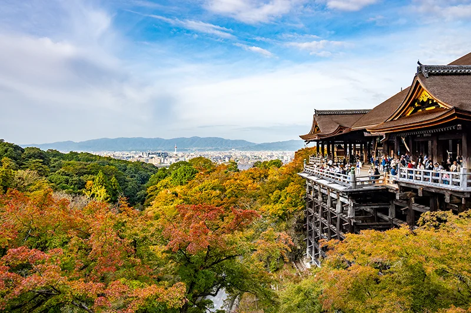
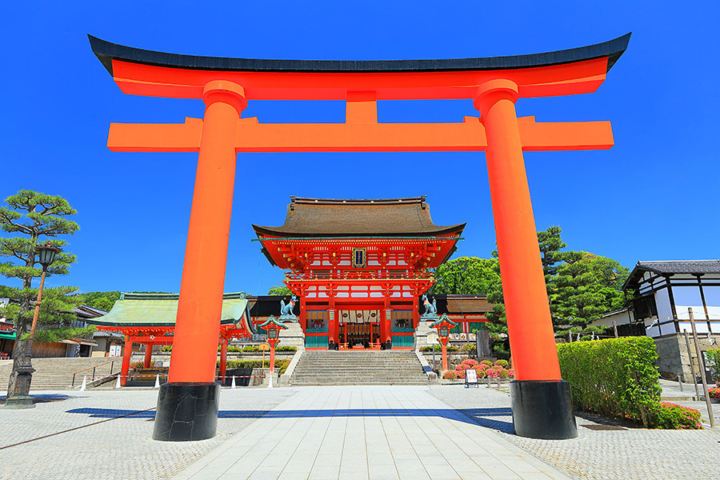
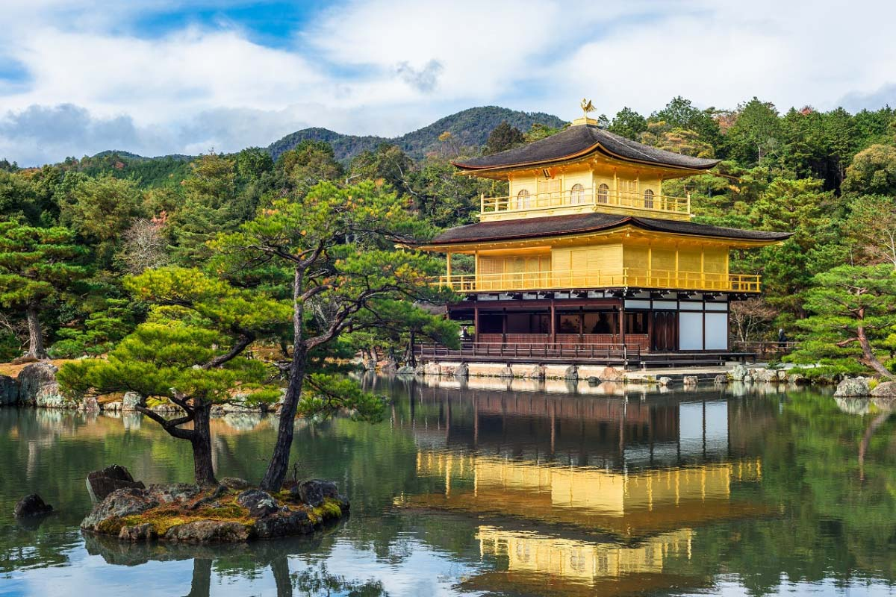
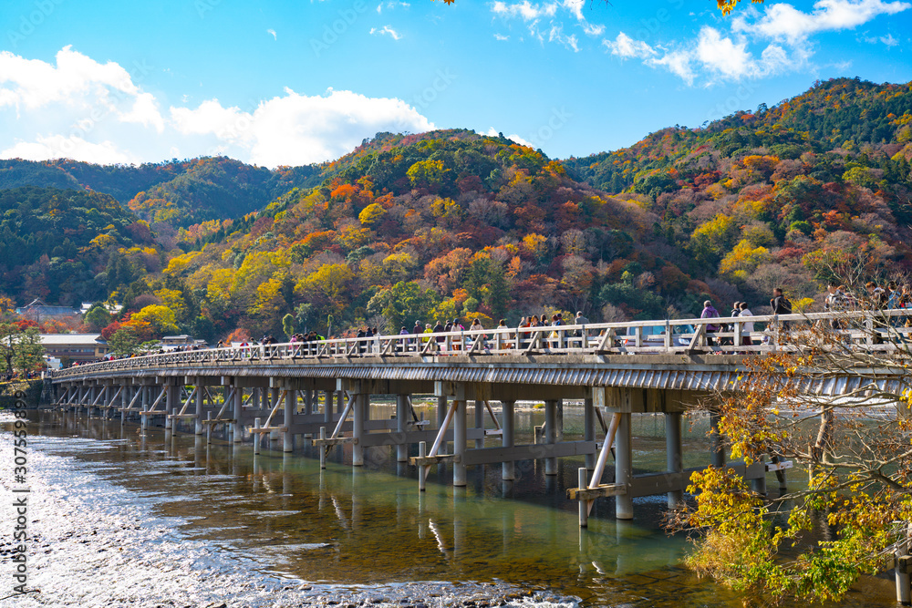

説明リスト
- 京都
- 近畿地方北部の府。かつての山城国・丹後国の全域と丹波国の一部を占める。中央部は丹波高地で，南部に京都盆地がある。北は日本海に面し，丹後半島が突出。府庁所在地，京都市。
- 京都は歴史と文化が息づく古都で、寺社仏閣や庭園、伝統的な町並み、四季折々の美しい風景が楽しめる魅力的な観光地
人気スポット
清水寺

伏見稲荷大社

金閣寺

嵐山

季節別 おすすめスポット
| おすすめスポット | 見どころ | 雰囲気 | |
|---|---|---|---|
| 春 | 円山公園 | 桜 | 華やか |
| 夏 | 八坂神社 | 祇園祭 | 活気がある |
| 秋 | 清水寺、嵐山 | 紅葉 | 落ち着いた美しさ |
| 冬 | 金閣寺 | 雪景色 | 静かで幻想的 |